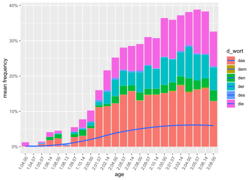
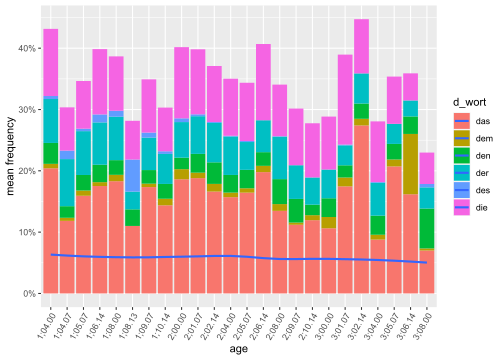
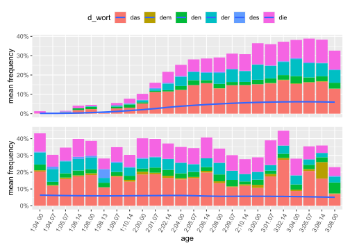
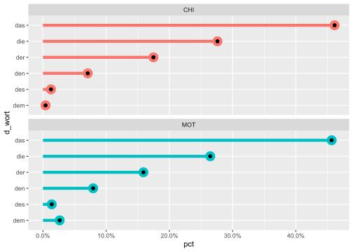

Kapitel 6 Spracherwerbsdaten
6.2 Daten lesen
Verwendet werden die Transkriptionsdateien der normalhörenden deutschsprachigen Kinder im Korpus von Szagun.
Zuerst wird das Arbeitsverzeichnis festgelegt. Dann werden alle (relevanten) Excel-Dateien gelesen und in der Variable “data” (einer Liste) gespeichert, die die Erwerbsdaten von 6 Kindern und deren Müttern enthält. Die Dateien konzentrieren sich auf sechs d-Wörter, die als Demonstrativpronomen und bestimmter Artikel dienen können.
Code (Version 1):
Wir erhalten 12 Datensätze (6 Kinder und 6 erwachsene Bezugspersonen, meistens die Mutter).
library(fs)
wd <- getwd()
wdd <- paste0(wd,"/data/szagun/")
file_paths <- fs::dir_ls(wdd)
file_paths## D:/Users/teodo/Documents/R/raj2022-book/data/szagun/Anna.xlsx
## D:/Users/teodo/Documents/R/raj2022-book/data/szagun/Anna_M.xlsx
## D:/Users/teodo/Documents/R/raj2022-book/data/szagun/Emely.xlsx
## D:/Users/teodo/Documents/R/raj2022-book/data/szagun/Emely_M.xlsx
## D:/Users/teodo/Documents/R/raj2022-book/data/szagun/Falko.xlsx
## D:/Users/teodo/Documents/R/raj2022-book/data/szagun/Falko_M.xlsx
## D:/Users/teodo/Documents/R/raj2022-book/data/szagun/Lisa.xlsx
## D:/Users/teodo/Documents/R/raj2022-book/data/szagun/Lisa_M.xlsx
## D:/Users/teodo/Documents/R/raj2022-book/data/szagun/Rahel.xlsx
## D:/Users/teodo/Documents/R/raj2022-book/data/szagun/Rahel_M.xlsx
## D:/Users/teodo/Documents/R/raj2022-book/data/szagun/Soeren.xlsx
## D:/Users/teodo/Documents/R/raj2022-book/data/szagun/Soeren_M.xlsxdata <- file_paths %>%
map(function (path) {
readxl::read_xlsx(path, skip = 3)
})
# dataCode (Version 2):
Wir erhalten 12 Datensätze (6 Kinder und 6 erwachsene Bezugspersonen, meistens die Mutter).
# rahel <- read_excel("data/Rahel_Mot.xlsx")
wd <- getwd()
wdd <- paste0(wd,"/data/szagun/")
setwd(wdd)
data.files = list.files(path = wdd, pattern = "\\.xlsx",
full.names = TRUE,
recursive = FALSE) # TRUE if subdirectories included
data <- lapply(data.files, readxl::read_excel, skip = 3)
# data
# dataframes: which columns are in common?
# common_cols <- intersect(colnames(f), colnames(g))6.3 Verknüpfung der einzelnen Dateien
Mit Clan wurden 12 Excel-Dateien zusammengestellt. Die Excel-Dateien werden nun zu einer einzelnen zusammengefasst. Zu diesem Zweck werden mit Hilfe einer Programm-Schleife mehrere Veränderungen vorgenommen:
- die data-Liste wird in einen Datensatz umgewandelt (as.data.frame, as_tibble),
- nicht relevante Variablen eliminiert (select),
- Variablen umbenannt (rename),
- neue Variablen aus bereits bestehenden geschaffen (separate),
- fehlende Spalten (z.B. für “das”) hinzugefügt (if … add_column),
- Variablen konvertiert (as.numeric).
szagun <- NULL
szagun <- data.frame()
for(i in 1:length(data)){
f <- data[i] %>%
as.data.frame() %>% as_tibble() %>% clean_names() %>%
dplyr::select(-c(language, corpus, sex, group, race, ses, role,
education, custom_field)) %>%
rename(utterances = starts_with("x_")) %>%
# mutate(des = ifelse("des" %in% names(.), des, NA)) %>% # add missing column "des" (but this doesn't work)
separate(file, into = c("id", "location"), sep = ",") %>%
dplyr::select(-location) %>%
rename(ageof = age) %>%
separate(id, into = c("id", "age"), sep = "_")
if(!'des' %in% names(f)) {
# if column "des" is missing, add it to dataframe, fill 0
f <- f %>% add_column(des = 0)}
# append file to previous file
szagun <- rbind(szagun, f)
}
szagun <- szagun %>%
mutate(ttr = as.numeric(ttr))
szagun <- szagun %>%
rename(age1 = age, age = ageof) %>%
mutate(age = age1) %>%
mutate(age = paste0(str_sub(age, 1, 1), ";",
str_sub(age, 2, 3), ".", str_sub(age, 4, 5)))Die gemeinsamen Spalten in Datensätzen (hier: f) kann man übrigens mit der Funktion intersect() herausfinden.
common_cols <- intersect(colnames(f), colnames(f))Hier ist nun die gesamte Tabelle (mit 6 Kindern und 6 Erwachsenen) für den von Szagun ausgewählten Beobachtungszeitraum.
library(DT)
szagun %>%
DT::datatable(filter = "top", fillContainer = T,
extensions = c('Buttons', "ColReorder", "RowReorder",
'FixedColumns', "KeyTable", "Scroller"),
options = list(pageLength = 10,
autowidth = TRUE,
colReorder = TRUE,
rowReorder = TRUE, order = list(c(0, 'asc')),
keys = TRUE,
deferRender = TRUE,
scrollY = 600, scroller = TRUE,
scrollX = TRUE,
fixedColumns =
list(leftColumns = 2, rightColumns = 1),
dom = 'Bfrtip', # Bfrtip or t
buttons = c('colvis','copy', 'csv', 'excel', 'pdf', 'print')
)) %>%
formatStyle("id",
target = 'row',
backgroundColor = styleEqual(c(0, 1), c('gray30', 'lightblue')))writexl::write_xlsx(szagun, "data/Kapitel 9 Spracherwerbsdaten Computergestütze Textanalyse mit R.xlsx")In der Gesamttabelle haben wir einen Fehler, den wir noch berichtigen müssen. Für die Mütter stehen uns nicht für jeden Monat Zahlen zur Verfügung. Dieser Zuordnungsfehler (MOT-Daten bei CHI zugeordnet) ist in der Graphik mit plotly (s.u.) bemerkbar. Außerdem gibt es auch kleinere monatliche Unterschiede bei den Kindern. Die Altersangaben müssen wir demnach vereinfachen (nur Jahr und Monat, eventuell auch bestimmte Monate zusammenfassen).
Das lassen wir im Augenblick noch außer Acht.
6.4 1. Häufigkeit insgesamt
children <- szagun %>%
filter(code == "CHI") %>%
pivot_longer(das:die, names_to = "d_wort", values_to = "freq") %>%
group_by(age, code, d_wort) %>%
summarise(avg_freq = mean(freq/utterances)) %>%
ggplot(aes(age, avg_freq, group = code, fill = d_wort)) +
geom_col() +
geom_smooth(se = F) +
scale_y_continuous(labels = label_percent(accuracy = 1)) +
labs(y = "mean frequency") +
theme(axis.text.x = element_text(angle = 60, hjust = 1))
ggsave(plot = children,
filename ="pictures/szagun_gesamtfrequenz_kinder.jpg",
dpi = 300)
children
library(plotly)
ggplotly(children)mothers <- szagun %>%
filter(code != "CHI") %>%
pivot_longer(das:die, names_to = "d_wort", values_to = "freq") %>%
group_by(age, code, d_wort) %>%
summarise(avg_freq = mean(freq/utterances)) %>%
ggplot(aes(age, avg_freq, group = code, fill = d_wort)) +
geom_col() +
geom_smooth(se = F) +
scale_y_continuous(labels = label_percent(accuracy = 1)) +
labs(y = "mean frequency") +
theme(axis.text.x = element_text(angle = 60, hjust = 1))
ggsave(plot = mothers,
filename ="pictures/szagun_gesamtfrequenz_muetter.jpg",
dpi = 300)
mothers
library(plotly)
ggplotly(mothers)library(patchwork)
gesamt1 <- (children + theme(legend.position = "top",
axis.ticks.x = element_blank(),
axis.text.x = element_blank(),
axis.title.x = element_blank()) +
guides(fill = guide_legend(nrow = 1))) /
(mothers + theme(legend.position = "none"))
ggsave(plot = gesamt1, filename ="pictures/szagun_gesamtfrequenz.jpg", dpi = 300)
gesamt1 
6.5 2. Welche d-Form am häufigsten?
topn <- szagun %>%
pivot_longer(das:die, names_to = "d_wort", values_to = "freq") %>%
group_by(code, d_wort) %>%
add_count(code) %>%
summarise(freqsum = sum(freq)) %>%
mutate(pct = freqsum/sum(freqsum)) %>%
mutate(d_wort = fct_reorder(d_wort, pct)) %>%
ggplot(aes(pct, d_wort, color = code)) +
# geom_col(position = "dodge", color = "black") +
geom_segment(aes(yend = d_wort, xend = 0), size = 2) +
geom_point(size = 6) +
geom_point(size = 2, color = "black") +
scale_x_continuous(labels = label_percent()) +
# guides(fill = guide_legend(nrow = 1)) +
theme(legend.position = "none") +
# labs(fill = "d-Wort: ") +
facet_wrap(~ code, dir = "v")
ggsave(plot = topn, filename ="pictures/szagun_frequenzverteilung.jpg", dpi = 300)
topn
d <- szagun %>%
pivot_longer(das:die, names_to = "d_wort", values_to = "freq") %>%
group_by(code, d_wort) %>%
summarise(freqsum = sum(freq)) %>%
pivot_wider(names_from = code, values_from = freqsum)
d %>%
arrange(-CHI) %>%
rmarkdown::paged_table()Sowohl bei den Kindern (CHI) als auch bei den Müttern (MOT) ergibt sich fast dieselbe Reihenfolge der Häufigkeiten. Der auffälligste Unterschied ist der zwischen den Häufigkeiten von des und dem.
d_dem <- szagun %>%
pivot_longer(das:die, names_to = "d_wort", values_to = "freq") %>%
group_by(code, d_wort) %>%
summarise(freqsum = sum(freq)) %>%
mutate(d_wort = ifelse(d_wort == "dem", "dem", "andere")) %>%
group_by(code, d_wort) %>%
summarise(freqsum = sum(freqsum)) %>%
pivot_wider(names_from = code, values_from = freqsum)
d_dem## # A tibble: 2 x 3
## d_wort CHI MOT
## <chr> <dbl> <dbl>
## 1 andere 24312 13898
## 2 dem 103 378Mit dem \(\chi^2\)-Quadrat-Test kann man prüfen, ob die beiden Stichproben statistisch signifikant unterschiedlich sind.
chires <- chisq.test(d_dem[,-1], B = 2000) # B: mit Monte Carlo test
chires##
## Pearson's Chi-squared test with Yates' continuity correction
##
## data: d_dem[, -1]
## X-squared = 361.75, df = 1, p-value < 2.2e-16observed <- chires$observed %>% as_tibble() %>% round(0) %>%
rename(CHI_obs = CHI, MOT_obs = MOT)
expected <- chires$expected %>% as_tibble() %>% round(0) %>%
rename(CHI_exp = CHI, MOT_exp = MOT)
frequenztabelle <- bind_cols(d_dem[,1], observed, expected)
frequenztabelle %>%
arrange(-CHI_obs) %>%
rmarkdown::paged_table()Hier folgt ein \(\chi^2\)-Quadrat-Test mit einem Kind, und zwar mit Rahel und ihrer MOT:
szagun %>%
filter(id == "Rahel") %>%
pivot_longer(das:die, names_to = "d_wort", values_to = "freq") %>%
group_by(code, d_wort) %>%
summarise(freqsum = sum(freq)) %>%
mutate(d_wort = ifelse(d_wort == "dem", "dem", "andere")) %>%
group_by(code, d_wort) %>%
summarise(freqsum = sum(freqsum)) %>%
pivot_wider(names_from = code, values_from = freqsum) %>%
select(-d_wort) %>%
chisq.test(.)##
## Pearson's Chi-squared test with Yates' continuity correction
##
## data: .
## X-squared = 96.562, df = 1, p-value < 2.2e-16Eine Frequenztabelle mit den d-Wörtern von Soren und seiner MOT (aber ohne \(\chi^2\)-Quadrat-Test):
szagun %>%
filter(id == "Soeren") %>%
pivot_longer(das:die, names_to = "d_wort", values_to = "freq") %>%
group_by(code, d_wort) %>%
summarise(freqsum = sum(freq)) %>%
pivot_wider(names_from = code, values_from = freqsum)## # A tibble: 6 x 3
## d_wort CHI MOT
## <chr> <dbl> <dbl>
## 1 das 2552 1136
## 2 dem 9 24
## 3 den 432 198
## 4 der 1101 300
## 5 des 24 1
## 6 die 1556 5196.6 3. Welche Form als erste?
Zur Beantwortung dieser Frage filtern wir zuerst die Spalten id und code. Dann sortieren wir die jeweilige Tabellen für das ausgewählte Kind nach Alter age. Mit der Funktion pivot_longer() bilden wir eine lange Tabellenform.
szagun %>%
filter(id == "Rahel",
code == "CHI") %>%
group_by(age) %>%
pivot_longer(das:die, names_to = "d_wort", values_to = "freq") %>%
filter(freq > 0)## # A tibble: 92 x 10
## # Groups: age [22]
## id age1 code age utterances types token ttr d_wort freq
## <chr> <chr> <chr> <chr> <dbl> <dbl> <dbl> <dbl> <chr> <dbl>
## 1 Rahel 10400 CHI 1;04.00 428 1 4 0.25 die 4
## 2 Rahel 10507 CHI 1;05.07 630 3 4 0.75 das 1
## 3 Rahel 10507 CHI 1;05.07 630 3 4 0.75 der 1
## 4 Rahel 10507 CHI 1;05.07 630 3 4 0.75 des 2
## 5 Rahel 10614 CHI 1;06.14 632 2 16 0.125 das 1
## 6 Rahel 10614 CHI 1;06.14 632 2 16 0.125 die 15
## 7 Rahel 10800 CHI 1;08.00 909 3 11 0.273 das 8
## 8 Rahel 10800 CHI 1;08.00 909 3 11 0.273 des 1
## 9 Rahel 10800 CHI 1;08.00 909 3 11 0.273 die 2
## 10 Rahel 10907 CHI 1;09.07 424 3 6 0.5 das 4
## # ... with 82 more rowsszagun %>%
filter(id == "Anna",
code == "CHI") %>%
group_by(age) %>%
pivot_longer(das:die, names_to = "d_wort", values_to = "freq") %>%
filter(freq > 0)## # A tibble: 116 x 10
## # Groups: age [22]
## id age1 code age utterances types token ttr d_wort freq
## <chr> <chr> <chr> <chr> <dbl> <dbl> <dbl> <dbl> <chr> <dbl>
## 1 Anna 10400 CHI 1;04.00 230 2 12 0.167 das 1
## 2 Anna 10400 CHI 1;04.00 230 2 12 0.167 die 11
## 3 Anna 10507 CHI 1;05.07 633 4 23 0.174 das 7
## 4 Anna 10507 CHI 1;05.07 633 4 23 0.174 den 1
## 5 Anna 10507 CHI 1;05.07 633 4 23 0.174 des 5
## 6 Anna 10507 CHI 1;05.07 633 4 23 0.174 die 10
## 7 Anna 10614 CHI 1;06.14 845 4 76 0.053 das 68
## 8 Anna 10614 CHI 1;06.14 845 4 76 0.053 der 1
## 9 Anna 10614 CHI 1;06.14 845 4 76 0.053 des 1
## 10 Anna 10614 CHI 1;06.14 845 4 76 0.053 die 6
## # ... with 106 more rowsszagun %>%
filter(id == "Emely",
code == "CHI") %>%
group_by(age) %>%
pivot_longer(das:die, names_to = "d_wort", values_to = "freq") %>%
filter(freq > 0)## # A tibble: 78 x 10
## # Groups: age [21]
## id age1 code age utterances types token ttr d_wort freq
## <chr> <chr> <chr> <chr> <dbl> <dbl> <dbl> <dbl> <chr> <dbl>
## 1 Emely 10407 CHI 1;04.07 374 1 1 1 des 1
## 2 Emely 10507 CHI 1;05.07 235 2 2 1 das 1
## 3 Emely 10507 CHI 1;05.07 235 2 2 1 des 1
## 4 Emely 10813 CHI 1;08.13 321 2 2 1 das 1
## 5 Emely 10813 CHI 1;08.13 321 2 2 1 des 1
## 6 Emely 10907 CHI 1;09.07 720 3 40 0.075 der 3
## 7 Emely 10907 CHI 1;09.07 720 3 40 0.075 des 1
## 8 Emely 10907 CHI 1;09.07 720 3 40 0.075 die 36
## 9 Emely 11014 CHI 1;10.14 875 4 76 0.053 das 1
## 10 Emely 11014 CHI 1;10.14 875 4 76 0.053 der 1
## # ... with 68 more rowsszagun %>%
filter(id == "Falko",
code == "CHI") %>%
group_by(age) %>%
pivot_longer(das:die, names_to = "d_wort", values_to = "freq") %>%
filter(freq > 0)## # A tibble: 93 x 10
## # Groups: age [19]
## id age1 code age utterances types token ttr d_wort freq
## <chr> <chr> <chr> <chr> <dbl> <dbl> <dbl> <dbl> <chr> <dbl>
## 1 Falko 10800 CHI 1;08.00 311 1 2 0.5 die 2
## 2 Falko 10907 CHI 1;09.07 238 2 3 0.667 das 1
## 3 Falko 10907 CHI 1;09.07 238 2 3 0.667 den 2
## 4 Falko 11014 CHI 1;10.14 378 2 28 0.071 das 27
## 5 Falko 11014 CHI 1;10.14 378 2 28 0.071 der 1
## 6 Falko 20000 CHI 2;00.00 817 6 55 0.109 das 37
## 7 Falko 20000 CHI 2;00.00 817 6 55 0.109 dem 1
## 8 Falko 20000 CHI 2;00.00 817 6 55 0.109 den 7
## 9 Falko 20000 CHI 2;00.00 817 6 55 0.109 der 4
## 10 Falko 20000 CHI 2;00.00 817 6 55 0.109 des 1
## # ... with 83 more rowsszagun %>%
filter(id == "Lisa",
code == "CHI") %>%
group_by(age) %>%
pivot_longer(das:die, names_to = "d_wort", values_to = "freq") %>%
filter(freq > 0)## # A tibble: 94 x 10
## # Groups: age [21]
## id age1 code age utterances types token ttr d_wort freq
## <chr> <chr> <chr> <chr> <dbl> <dbl> <dbl> <dbl> <chr> <dbl>
## 1 Lisa 10507 CHI 1;05.07 694 2 3 0.667 das 1
## 2 Lisa 10507 CHI 1;05.07 694 2 3 0.667 die 2
## 3 Lisa 10614 CHI 1;06.14 555 2 24 0.083 den 1
## 4 Lisa 10614 CHI 1;06.14 555 2 24 0.083 die 23
## 5 Lisa 10800 CHI 1;08.00 410 3 11 0.273 den 3
## 6 Lisa 10800 CHI 1;08.00 410 3 11 0.273 der 3
## 7 Lisa 10800 CHI 1;08.00 410 3 11 0.273 die 5
## 8 Lisa 10907 CHI 1;09.07 580 4 20 0.2 das 2
## 9 Lisa 10907 CHI 1;09.07 580 4 20 0.2 den 3
## 10 Lisa 10907 CHI 1;09.07 580 4 20 0.2 der 5
## # ... with 84 more rowsszagun %>%
filter(id == "Soeren",
code == "CHI") %>%
group_by(age) %>%
pivot_longer(das:die, names_to = "d_wort", values_to = "freq") %>%
filter(freq > 0)## # A tibble: 95 x 10
## # Groups: age [22]
## id age1 code age utterances types token ttr d_wort freq
## <chr> <chr> <chr> <chr> <dbl> <dbl> <dbl> <dbl> <chr> <dbl>
## 1 Soeren 10400 CHI 1;04.00 487 1 1 1 das 1
## 2 Soeren 10507 CHI 1;05.07 663 2 21 0.095 das 19
## 3 Soeren 10507 CHI 1;05.07 663 2 21 0.095 der 2
## 4 Soeren 10614 CHI 1;06.14 765 4 68 0.059 das 23
## 5 Soeren 10614 CHI 1;06.14 765 4 68 0.059 den 39
## 6 Soeren 10614 CHI 1;06.14 765 4 68 0.059 der 1
## 7 Soeren 10614 CHI 1;06.14 765 4 68 0.059 die 5
## 8 Soeren 10800 CHI 1;08.00 753 5 84 0.06 das 42
## 9 Soeren 10800 CHI 1;08.00 753 5 84 0.06 dem 1
## 10 Soeren 10800 CHI 1;08.00 753 5 84 0.06 den 35
## # ... with 85 more rows6.7 4. Wann alle d-Formen vertreten?
Die Vorgangsweise ist fast dieselbe wie bei der vorherigen Frage, aber wir filtern dieses Mal zusätzlich die Anzahl der types.
szagun %>%
filter(id == "Rahel",
code == "CHI") %>%
group_by(age) %>%
pivot_longer(das:die, names_to = "d_wort", values_to = "freq") %>%
filter(types >= 5)## # A tibble: 66 x 10
## # Groups: age [11]
## id age1 code age utterances types token ttr d_wort freq
## <chr> <chr> <chr> <chr> <dbl> <dbl> <dbl> <dbl> <chr> <dbl>
## 1 Rahel 20107 CHI 2;01.07 556 5 25 0.2 das 18
## 2 Rahel 20107 CHI 2;01.07 556 5 25 0.2 dem 0
## 3 Rahel 20107 CHI 2;01.07 556 5 25 0.2 den 1
## 4 Rahel 20107 CHI 2;01.07 556 5 25 0.2 der 1
## 5 Rahel 20107 CHI 2;01.07 556 5 25 0.2 des 3
## 6 Rahel 20107 CHI 2;01.07 556 5 25 0.2 die 2
## 7 Rahel 20400 CHI 2;04.00 1115 5 122 0.041 das 100
## 8 Rahel 20400 CHI 2;04.00 1115 5 122 0.041 dem 0
## 9 Rahel 20400 CHI 2;04.00 1115 5 122 0.041 den 2
## 10 Rahel 20400 CHI 2;04.00 1115 5 122 0.041 der 5
## # ... with 56 more rowsszagun %>%
filter(id == "Rahel",
code == "CHI") %>%
group_by(age) %>%
pivot_longer(das:die, names_to = "d_wort", values_to = "freq") %>%
filter(types == 6)## # A tibble: 12 x 10
## # Groups: age [2]
## id age1 code age utterances types token ttr d_wort freq
## <chr> <chr> <chr> <chr> <dbl> <dbl> <dbl> <dbl> <chr> <dbl>
## 1 Rahel 21014 CHI 2;10.14 741 6 362 0.017 das 159
## 2 Rahel 21014 CHI 2;10.14 741 6 362 0.017 dem 3
## 3 Rahel 21014 CHI 2;10.14 741 6 362 0.017 den 5
## 4 Rahel 21014 CHI 2;10.14 741 6 362 0.017 der 57
## 5 Rahel 21014 CHI 2;10.14 741 6 362 0.017 des 1
## 6 Rahel 21014 CHI 2;10.14 741 6 362 0.017 die 137
## 7 Rahel 30107 CHI 3;01.07 1035 6 420 0.014 das 233
## 8 Rahel 30107 CHI 3;01.07 1035 6 420 0.014 dem 4
## 9 Rahel 30107 CHI 3;01.07 1035 6 420 0.014 den 16
## 10 Rahel 30107 CHI 3;01.07 1035 6 420 0.014 der 57
## 11 Rahel 30107 CHI 3;01.07 1035 6 420 0.014 des 1
## 12 Rahel 30107 CHI 3;01.07 1035 6 420 0.014 die 109szagun %>%
filter(id == "Anna",
code == "CHI") %>%
group_by(age) %>%
pivot_longer(das:die, names_to = "d_wort", values_to = "freq") %>%
filter(types >= 5)## # A tibble: 114 x 10
## # Groups: age [19]
## id age1 code age utterances types token ttr d_wort freq
## <chr> <chr> <chr> <chr> <dbl> <dbl> <dbl> <dbl> <chr> <dbl>
## 1 Anna 10800 CHI 1;08.00 1247 5 87 0.057 das 66
## 2 Anna 10800 CHI 1;08.00 1247 5 87 0.057 dem 0
## 3 Anna 10800 CHI 1;08.00 1247 5 87 0.057 den 5
## 4 Anna 10800 CHI 1;08.00 1247 5 87 0.057 der 1
## 5 Anna 10800 CHI 1;08.00 1247 5 87 0.057 des 2
## 6 Anna 10800 CHI 1;08.00 1247 5 87 0.057 die 13
## 7 Anna 10907 CHI 1;09.07 1076 5 149 0.034 das 127
## 8 Anna 10907 CHI 1;09.07 1076 5 149 0.034 dem 0
## 9 Anna 10907 CHI 1;09.07 1076 5 149 0.034 den 5
## 10 Anna 10907 CHI 1;09.07 1076 5 149 0.034 der 7
## # ... with 104 more rowsszagun %>%
filter(id == "Anna",
code == "CHI") %>%
group_by(age) %>%
pivot_longer(das:die, names_to = "d_wort", values_to = "freq") %>%
filter(types == 6)## # A tibble: 66 x 10
## # Groups: age [11]
## id age1 code age utterances types token ttr d_wort freq
## <chr> <chr> <chr> <chr> <dbl> <dbl> <dbl> <dbl> <chr> <dbl>
## 1 Anna 20000 CHI 2;00.00 957 6 226 0.027 das 93
## 2 Anna 20000 CHI 2;00.00 957 6 226 0.027 dem 1
## 3 Anna 20000 CHI 2;00.00 957 6 226 0.027 den 4
## 4 Anna 20000 CHI 2;00.00 957 6 226 0.027 der 32
## 5 Anna 20000 CHI 2;00.00 957 6 226 0.027 des 9
## 6 Anna 20000 CHI 2;00.00 957 6 226 0.027 die 87
## 7 Anna 20214 CHI 2;02.14 929 6 251 0.024 das 55
## 8 Anna 20214 CHI 2;02.14 929 6 251 0.024 dem 3
## 9 Anna 20214 CHI 2;02.14 929 6 251 0.024 den 14
## 10 Anna 20214 CHI 2;02.14 929 6 251 0.024 der 57
## # ... with 56 more rowsszagun %>%
filter(id == "Emely",
code == "CHI") %>%
group_by(age) %>%
pivot_longer(das:die, names_to = "d_wort", values_to = "freq") %>%
filter(types >= 5)## # A tibble: 54 x 10
## # Groups: age [9]
## id age1 code age utterances types token ttr d_wort freq
## <chr> <chr> <chr> <chr> <dbl> <dbl> <dbl> <dbl> <chr> <dbl>
## 1 Emely 20907 CHI 2;09.07 1103 5 161 0.031 das 107
## 2 Emely 20907 CHI 2;09.07 1103 5 161 0.031 dem 0
## 3 Emely 20907 CHI 2;09.07 1103 5 161 0.031 den 4
## 4 Emely 20907 CHI 2;09.07 1103 5 161 0.031 der 28
## 5 Emely 20907 CHI 2;09.07 1103 5 161 0.031 des 3
## 6 Emely 20907 CHI 2;09.07 1103 5 161 0.031 die 19
## 7 Emely 21014 CHI 2;10.14 1004 5 217 0.023 das 141
## 8 Emely 21014 CHI 2;10.14 1004 5 217 0.023 dem 0
## 9 Emely 21014 CHI 2;10.14 1004 5 217 0.023 den 7
## 10 Emely 21014 CHI 2;10.14 1004 5 217 0.023 der 28
## # ... with 44 more rowsszagun %>%
filter(id == "Emely",
code == "CHI") %>%
group_by(age) %>%
pivot_longer(das:die, names_to = "d_wort", values_to = "freq") %>%
filter(types == 6)## # A tibble: 0 x 10
## # Groups: age [0]
## # ... with 10 variables: id <chr>, age1 <chr>, code <chr>, age <chr>,
## # utterances <dbl>, types <dbl>, token <dbl>, ttr <dbl>, d_wort <chr>,
## # freq <dbl>szagun %>%
filter(id == "Falko",
code == "CHI") %>%
group_by(age) %>%
pivot_longer(das:die, names_to = "d_wort", values_to = "freq") %>%
filter(types >= 5)## # A tibble: 90 x 10
## # Groups: age [15]
## id age1 code age utterances types token ttr d_wort freq
## <chr> <chr> <chr> <chr> <dbl> <dbl> <dbl> <dbl> <chr> <dbl>
## 1 Falko 20000 CHI 2;00.00 817 6 55 0.109 das 37
## 2 Falko 20000 CHI 2;00.00 817 6 55 0.109 dem 1
## 3 Falko 20000 CHI 2;00.00 817 6 55 0.109 den 7
## 4 Falko 20000 CHI 2;00.00 817 6 55 0.109 der 4
## 5 Falko 20000 CHI 2;00.00 817 6 55 0.109 des 1
## 6 Falko 20000 CHI 2;00.00 817 6 55 0.109 die 5
## 7 Falko 20107 CHI 2;01.07 734 5 251 0.02 das 195
## 8 Falko 20107 CHI 2;01.07 734 5 251 0.02 dem 0
## 9 Falko 20107 CHI 2;01.07 734 5 251 0.02 den 5
## 10 Falko 20107 CHI 2;01.07 734 5 251 0.02 der 6
## # ... with 80 more rowsszagun %>%
filter(id == "Falko",
code == "CHI") %>%
group_by(age) %>%
pivot_longer(das:die, names_to = "d_wort", values_to = "freq") %>%
filter(types == 6)## # A tibble: 54 x 10
## # Groups: age [9]
## id age1 code age utterances types token ttr d_wort freq
## <chr> <chr> <chr> <chr> <dbl> <dbl> <dbl> <dbl> <chr> <dbl>
## 1 Falko 20000 CHI 2;00.00 817 6 55 0.109 das 37
## 2 Falko 20000 CHI 2;00.00 817 6 55 0.109 dem 1
## 3 Falko 20000 CHI 2;00.00 817 6 55 0.109 den 7
## 4 Falko 20000 CHI 2;00.00 817 6 55 0.109 der 4
## 5 Falko 20000 CHI 2;00.00 817 6 55 0.109 des 1
## 6 Falko 20000 CHI 2;00.00 817 6 55 0.109 die 5
## 7 Falko 20614 CHI 2;06.14 806 6 290 0.021 das 149
## 8 Falko 20614 CHI 2;06.14 806 6 290 0.021 dem 1
## 9 Falko 20614 CHI 2;06.14 806 6 290 0.021 den 17
## 10 Falko 20614 CHI 2;06.14 806 6 290 0.021 der 42
## # ... with 44 more rowsszagun %>%
filter(id == "Lisa",
code == "CHI") %>%
group_by(age) %>%
pivot_longer(das:die, names_to = "d_wort", values_to = "freq") %>%
filter(types >= 5)## # A tibble: 66 x 10
## # Groups: age [11]
## id age1 code age utterances types token ttr d_wort freq
## <chr> <chr> <chr> <chr> <dbl> <dbl> <dbl> <dbl> <chr> <dbl>
## 1 Lisa 20400 CHI 2;04.00 693 5 140 0.036 das 94
## 2 Lisa 20400 CHI 2;04.00 693 5 140 0.036 dem 0
## 3 Lisa 20400 CHI 2;04.00 693 5 140 0.036 den 20
## 4 Lisa 20400 CHI 2;04.00 693 5 140 0.036 der 4
## 5 Lisa 20400 CHI 2;04.00 693 5 140 0.036 des 6
## 6 Lisa 20400 CHI 2;04.00 693 5 140 0.036 die 16
## 7 Lisa 20507 CHI 2;05.07 735 6 126 0.048 das 46
## 8 Lisa 20507 CHI 2;05.07 735 6 126 0.048 dem 1
## 9 Lisa 20507 CHI 2;05.07 735 6 126 0.048 den 35
## 10 Lisa 20507 CHI 2;05.07 735 6 126 0.048 der 9
## # ... with 56 more rowsszagun %>%
filter(id == "Lisa",
code == "CHI") %>%
group_by(age) %>%
pivot_longer(das:die, names_to = "d_wort", values_to = "freq") %>%
filter(types == 6)## # A tibble: 30 x 10
## # Groups: age [5]
## id age1 code age utterances types token ttr d_wort freq
## <chr> <chr> <chr> <chr> <dbl> <dbl> <dbl> <dbl> <chr> <dbl>
## 1 Lisa 20507 CHI 2;05.07 735 6 126 0.048 das 46
## 2 Lisa 20507 CHI 2;05.07 735 6 126 0.048 dem 1
## 3 Lisa 20507 CHI 2;05.07 735 6 126 0.048 den 35
## 4 Lisa 20507 CHI 2;05.07 735 6 126 0.048 der 9
## 5 Lisa 20507 CHI 2;05.07 735 6 126 0.048 des 2
## 6 Lisa 20507 CHI 2;05.07 735 6 126 0.048 die 33
## 7 Lisa 30000 CHI 3;00.00 602 6 197 0.03 das 94
## 8 Lisa 30000 CHI 3;00.00 602 6 197 0.03 dem 2
## 9 Lisa 30000 CHI 3;00.00 602 6 197 0.03 den 12
## 10 Lisa 30000 CHI 3;00.00 602 6 197 0.03 der 13
## # ... with 20 more rowsszagun %>%
filter(id == "Soeren",
code == "CHI") %>%
group_by(age) %>%
pivot_longer(das:die, names_to = "d_wort", values_to = "freq") %>%
filter(types >= 5)## # A tibble: 72 x 10
## # Groups: age [12]
## id age1 code age utterances types token ttr d_wort freq
## <chr> <chr> <chr> <chr> <dbl> <dbl> <dbl> <dbl> <chr> <dbl>
## 1 Soeren 10800 CHI 1;08.00 753 5 84 0.06 das 42
## 2 Soeren 10800 CHI 1;08.00 753 5 84 0.06 dem 1
## 3 Soeren 10800 CHI 1;08.00 753 5 84 0.06 den 35
## 4 Soeren 10800 CHI 1;08.00 753 5 84 0.06 der 3
## 5 Soeren 10800 CHI 1;08.00 753 5 84 0.06 des 0
## 6 Soeren 10800 CHI 1;08.00 753 5 84 0.06 die 3
## 7 Soeren 20000 CHI 2;00.00 679 5 101 0.05 das 60
## 8 Soeren 20000 CHI 2;00.00 679 5 101 0.05 dem 1
## 9 Soeren 20000 CHI 2;00.00 679 5 101 0.05 den 14
## 10 Soeren 20000 CHI 2;00.00 679 5 101 0.05 der 13
## # ... with 62 more rowsszagun %>%
filter(id == "Soeren",
code == "CHI") %>%
group_by(age) %>%
pivot_longer(das:die, names_to = "d_wort", values_to = "freq") %>%
filter(types == 6)## # A tibble: 6 x 10
## # Groups: age [1]
## id age1 code age utterances types token ttr d_wort freq
## <chr> <chr> <chr> <chr> <dbl> <dbl> <dbl> <dbl> <chr> <dbl>
## 1 Soeren 30214 CHI 3;02.14 1119 6 361 0.017 das 169
## 2 Soeren 30214 CHI 3;02.14 1119 6 361 0.017 dem 2
## 3 Soeren 30214 CHI 3;02.14 1119 6 361 0.017 den 25
## 4 Soeren 30214 CHI 3;02.14 1119 6 361 0.017 der 67
## 5 Soeren 30214 CHI 3;02.14 1119 6 361 0.017 des 2
## 6 Soeren 30214 CHI 3;02.14 1119 6 361 0.017 die 966.8 5. Bevorzugtes d-Wort von MOT
szagun %>%
filter(id == "Rahel",
code == "MOT") %>%
pivot_longer(das:die, names_to = "d_wort", values_to = "freq") %>%
group_by(d_wort) %>%
summarise(sum = sum(freq)) %>%
arrange(-sum)## # A tibble: 6 x 2
## d_wort sum
## <chr> <dbl>
## 1 das 1051
## 2 die 602
## 3 der 382
## 4 den 217
## 5 dem 73
## 6 des 1szagun %>%
filter(id == "Anna",
code == "MOT") %>%
pivot_longer(das:die, names_to = "d_wort", values_to = "freq") %>%
group_by(d_wort) %>%
summarise(sum = sum(freq)) %>%
arrange(-sum)## # A tibble: 6 x 2
## d_wort sum
## <chr> <dbl>
## 1 das 1315
## 2 die 1052
## 3 der 557
## 4 den 252
## 5 dem 132
## 6 des 129szagun %>%
filter(id == "Emely",
code == "MOT") %>%
pivot_longer(das:die, names_to = "d_wort", values_to = "freq") %>%
group_by(d_wort) %>%
summarise(sum = sum(freq)) %>%
arrange(-sum)## # A tibble: 6 x 2
## d_wort sum
## <chr> <dbl>
## 1 das 831
## 2 die 376
## 3 der 287
## 4 den 106
## 5 des 66
## 6 dem 24szagun %>%
filter(id == "Falko",
code == "MOT") %>%
pivot_longer(das:die, names_to = "d_wort", values_to = "freq") %>%
group_by(d_wort) %>%
summarise(sum = sum(freq)) %>%
arrange(-sum)## # A tibble: 6 x 2
## d_wort sum
## <chr> <dbl>
## 1 das 951
## 2 die 594
## 3 der 468
## 4 den 175
## 5 dem 44
## 6 des 0szagun %>%
filter(id == "Lisa",
code == "MOT") %>%
pivot_longer(das:die, names_to = "d_wort", values_to = "freq") %>%
group_by(d_wort) %>%
summarise(sum = sum(freq)) %>%
arrange(-sum)## # A tibble: 6 x 2
## d_wort sum
## <chr> <dbl>
## 1 das 1235
## 2 die 635
## 3 der 275
## 4 den 186
## 5 dem 81
## 6 des 1szagun %>%
filter(id == "Soeren",
code == "MOT") %>%
pivot_longer(das:die, names_to = "d_wort", values_to = "freq") %>%
group_by(d_wort) %>%
summarise(sum = sum(freq)) %>%
arrange(-sum)## # A tibble: 6 x 2
## d_wort sum
## <chr> <dbl>
## 1 das 1136
## 2 die 519
## 3 der 300
## 4 den 198
## 5 dem 24
## 6 des 16.9 6. Welche Formen hört Rahel nie / kaum?
szagun %>%
filter(id == "Rahel",
code == "MOT") %>%
pivot_longer(das:die, names_to = "d_wort", values_to = "freq") %>%
group_by(d_wort) %>%
summarise(sum = sum(freq)) %>%
arrange(sum)## # A tibble: 6 x 2
## d_wort sum
## <chr> <dbl>
## 1 des 1
## 2 dem 73
## 3 den 217
## 4 der 382
## 5 die 602
## 6 das 1051szagun %>%
filter(id == "Anna",
code == "MOT") %>%
pivot_longer(das:die, names_to = "d_wort", values_to = "freq") %>%
group_by(d_wort) %>%
summarise(sum = sum(freq)) %>%
arrange(sum)## # A tibble: 6 x 2
## d_wort sum
## <chr> <dbl>
## 1 des 129
## 2 dem 132
## 3 den 252
## 4 der 557
## 5 die 1052
## 6 das 1315szagun %>%
filter(id == "Emely",
code == "MOT") %>%
pivot_longer(das:die, names_to = "d_wort", values_to = "freq") %>%
group_by(d_wort) %>%
summarise(sum = sum(freq)) %>%
arrange(sum)## # A tibble: 6 x 2
## d_wort sum
## <chr> <dbl>
## 1 dem 24
## 2 des 66
## 3 den 106
## 4 der 287
## 5 die 376
## 6 das 831szagun %>%
filter(id == "Falko",
code == "MOT") %>%
pivot_longer(das:die, names_to = "d_wort", values_to = "freq") %>%
group_by(d_wort) %>%
summarise(sum = sum(freq)) %>%
arrange(sum)## # A tibble: 6 x 2
## d_wort sum
## <chr> <dbl>
## 1 des 0
## 2 dem 44
## 3 den 175
## 4 der 468
## 5 die 594
## 6 das 951szagun %>%
filter(id == "Lisa",
code == "MOT") %>%
pivot_longer(das:die, names_to = "d_wort", values_to = "freq") %>%
group_by(d_wort) %>%
summarise(sum = sum(freq)) %>%
arrange(sum)## # A tibble: 6 x 2
## d_wort sum
## <chr> <dbl>
## 1 des 1
## 2 dem 81
## 3 den 186
## 4 der 275
## 5 die 635
## 6 das 1235szagun %>%
filter(id == "Soeren",
code == "MOT") %>%
pivot_longer(das:die, names_to = "d_wort", values_to = "freq") %>%
group_by(d_wort) %>%
summarise(sum = sum(freq)) %>%
arrange(sum)## # A tibble: 6 x 2
## d_wort sum
## <chr> <dbl>
## 1 des 1
## 2 dem 24
## 3 den 198
## 4 der 300
## 5 die 519
## 6 das 1136